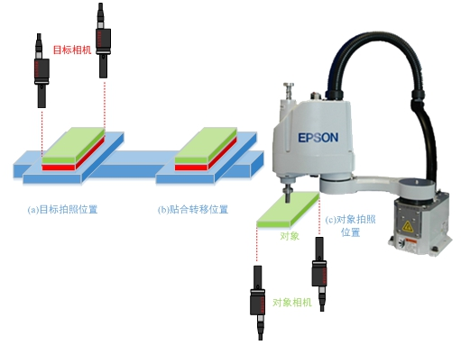
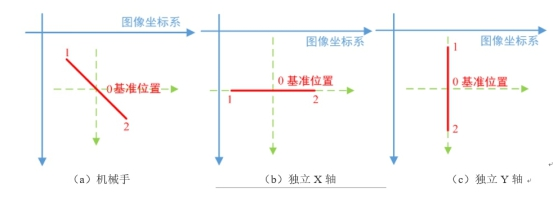

Nguyên lý cơ bản của công cụ liên kết là thông qua chuyển động đối vị ngược (Reverse alignment motion) của robot và nền tảng để chuyển đối tượng sản phẩm từ camera nguồn (object camera) sang camera mục tiêu (target camera) nhiều lần. Kết hợp với kết quả hiệu chuẩn của camera nguồn, hệ thống sẽ thiết lập quan hệ chuyển đổi giữa hệ tọa độ hình ảnh mục tiêu và hệ tọa độ nền tảng.

Như quy trình thay đổi vị trí trong Hình 1, chuyển động dịch chuyển của hiệu chuẩn liên kết ngược với chuyển động đối vị (Alignment). Camera nguồn chụp ảnh đối tượng tại vị trí (c), robot và nền tảng hoàn tất việc lắp ráp hoặc dán ép tại vị trí (b), sau đó camera mục tiêu chụp ảnh đối tượng tại vị trí (a). Các bước trên được lặp lại nhiều lần theo số bước quy định. Công cụ "Lấy vị trí trục hiệu chuẩn liên kết" được sử dụng để tạo ra các vị trí trục tương đối tương ứng với số bước trong quá trình hiệu chuẩn liên kết.
| Phân loại | Tên tham số | Mô tả tham số |
|---|---|---|
| Cửa sổ thuộc tính | Loại nền tảng (Platform Type) | Có ba tùy chọn loại: XY, X, hoặc Y. Nghĩa là trong hiệu chuẩn liên kết này không tồn tại độ lệch trục D (trục xoay). |
| Số bước chuyển động hiệu chuẩn | Thiết lập số bước chuyển động của trục trong hiệu chuẩn liên kết. Đối với chuyển động trục X hoặc Y đơn lẻ chỉ cần 2 bước, trong khi chuyển động trục XY có thể chọn 2/3/4 bước. |
|
| Hướng dương của trục | Dùng để thiết lập hướng trục X/Y dựa trên dự án thực tế. | |
| Bước dịch chuyển trục (Step length) | Dùng để thiết lập khoảng cách dịch chuyển (step length) của trục X/Y dựa trên dự án thực tế. | |
| Cửa sổ hình ảnh | Không | Không |
| Chuỗi dữ liệu | Giá trị chỉ mục (Index) | Nhập chỉ mục bước (Step index) để quyết định đầu ra vị trí trục tương ứng với chỉ mục đó. |
| Giao diện nâng cao | Không | Không |
| 分类 | 参数名称 | 参数描述 |
|---|---|---|
| 监视窗口 | 轴位置 | 索引值对应的轴位置结果。 |
| 交互运动步长 | 输出轴的交互运动步长。 | |
| 轴方向 | 输出轴正方向。 | |
| 执行结果 | 工具执行结果。 | |
| 执行时间 | 工具执行时间。 | |
| 数据链 | 轴位置 | 索引值对应的轴位置结果，供后序工具使用，同监视窗口参数。 |
| 交互运动步长 | 轴的交互运动步长，供后序工具使用，同监视窗口参数。 | |
| 轴方向 | 轴正方向，供后序工具使用，同监视窗口参数。 |
在关联标定运动中，轴类型的不同，则关联点不同，对应的反向运动转移次数也不同。对于独立X或Y轴等单轴平台，适用于进行两点关联标定，机械手进行两次转移运动；对于XYD平台，则可以进行两点、三点或四点的关联标定，机械手进行相应次数的运动。具体如下：
1.两点关联标定是指，机械手进行两次转移运动，建立目标图像坐标系与平台坐标系的转换关系，包括旋转、缩放和平移。两点关联标定适用于机械手，以及独立X或Y轴等单轴平台。两点关联标定的转移运动路径，如图2所示。

表1是图2对应的位置列表，X0和Y0是机械手预设的拍照位置，即基准位置，DX和DY是机械手在X和Y方向的单位运动步长。
| 索引 | 位置 | XY轴坐标 | X轴坐标 | Y轴坐标 |
|---|---|---|---|---|
| 0 | 基准位置的负方向 | (X0 - DX, Y0 - DY) | X0 - DX | Y0 - DY |
| 1 | 基准位置的正方向 | (X0 + DX, Y0 + DY) | X0 + DX | Y0 + DY |
2.三点关联标定是指，机械手进行三次转移运动，建立目标图像坐标系与平台坐标系的转换关系，包括旋转、缩放和平移。三点关联标定的转移运动路径，如图3所示。

表2是图3对应的位置列表，X0和Y0是机械手预设的拍照位置，即基准位置，DX和DY是机械手在X和Y方向的单位运动步长。
| 索引 | 位置 | XY轴坐标 |
|---|---|---|
| 0 | 基准位置的左上 | (X0 - DX, Y0 - DY) |
| 1 | 基准位置的左下 | (X0 - DX, Y0 + DY) |
| 2 | 基准位置的右下 | (X0 + DX, Y0 + DY) |
3.四点关联标定是指，机械手进行四次转移运动，建立目标图像坐标系与平台坐标系的转换关系，包括旋转、缩放和平移。四点关联标定的转移运动路径，如图4所示。

表3是图4对应的位置列表，X0和Y0是机械手预设的拍照位置，即基准位置，DX和DY是机械手在X和Y方向的单位运动步长。
| 索引 | 位置 | XY轴坐标 |
|---|---|---|
| 0 | 基准位置的正右 | (X0 + DX, Y0) |
| 1 | 基准位置的正左 | (X0 - DX, Y0) |
| 2 | 基准位置的正下 | (X0 , Y0 + DY) |
| 3 | 基准位置的正上 | (X0 , Y0 - DY) |
参见“\Samples\XY轴4步关联标定+对位计算.gvp”